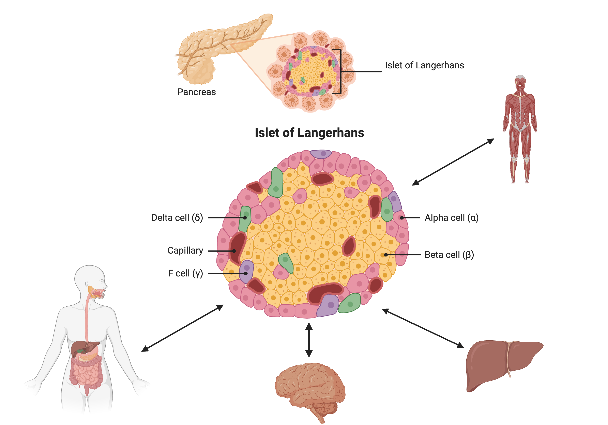

Genetic Drivers of Pancreatic Islet Function
Last updated on 2024-12-13 | Edit this page
Overview
Questions
- What is the hypothesis of an example eQTL study?
Objectives
- Describe an example eQTL study in Diversity Outbred mice.
- State the hypothesis from an example eQTL study in Diversity Outbred mice.
Genome-wide association studies (GWAS) often identify variants in non-coding regions of the genome, indicating that regulation of gene expression predominates in common diseases like type II diabetes. In type II diabetes (T2D) the pancreas produces less insulin and the body becomes less responsive to insulin.
 Created in BioRender
Created in BioRender
Most of the more than 100 genetic loci associated with T2D affect the function of pancreatic islets. This study offers supporting evidence for T2D-associated loci in human GWAS, most of which affect pancreatic islet function. Pancreatic islet cells produce endocrine hormones including insulin. A feedback loop of glucose and insulin activates beta cells that produce insulin and inhibits alpha cells in the pancreas.
 Created in BioRender
Susceptibility to type II diabetes (T2D) increases with obesity, such that T2D-associated genetic loci operate mainly under conditions of obesity (See Keller, Mark P et al. “Genetic Drivers of Pancreatic Islet Function.” Genetics vol. 209,1 (2018): 335-356). Like most GWAS loci, the T2D-associated genetic loci identified from GWAS have very small effect sizes and odds ratios just slightly more than 1.
This study explored islet gene expression in diabetes. The authors hypothesized that gene expression changes in response to dietary challenge would reveal signaling pathways involved in stress responses. The expression of many genes often map to the same locus, indicating that expression of these genes is controlled in common. If their mRNAs encode proteins with common physiological functions, the function of the controlling gene(s) is revealed. Variation in expression of the controlling gene(s), rather than a genetic variant, can be tested as an immediate cause of a disease-related phenotype.
In this study, Diversity Outbred (DO) mice were fed a high-fat, high-sugar diet as a stressor, sensitizing the mice to develop diabetic traits. Body weight and plasma glucose, insulin, and triglyceride measurements were taken biweekly. Food intake could be measured since animals were individually housed. A glucose tolerance test at 18 weeks of age provided measurement of dynamic glucose and insulin changes at 5, 15, 30, 60 and 120 minutes after glucose administration. Area under the curve (AUC) was determined from these time points for both plasma glucose and insulin levels.

In the figure above, time is plotted on the X-axis and glucose or insulin levels are plotted on the Y-axis. Blood is taken at the beginning of the test and at several time points after the glucose bolus. The glucose or insulin AUC is the area under the measured points down to the baseline level. A diversity of responses to the glucose tolerance test is illustrated below.

Homeostatic model assessment (HOMA) quantifies insulin resistance (IR) and beta cell (\(\beta\)) function. For IR, the equation quantifying insulin resistance is the product of glucose and insulin in mg/dL divided by 405.
\(HOMA-IR = (glucose \times insulin) / 405\)
For beta cell function, the equation is
\(HOMA-\beta = (360 \times insulin) / (glucose - 63)\)
expressed as a percentage. Insulin resistance and beta cell function were determined after the glucose tolerance test was given. Islet cells were isolated from pancreas, and RNA extracted and libraries constructed from isolated RNA for gene expression measurements.
Genome scans were performed with the leave-one-chromosome-out (LOCO) method for kinship correction. Sex and experimental cohort (DO wave) were used as covariates. The results of one scan for insulin area under the curve (AUC) is shown below with a strong peak on chromosome 11. In this lesson, we will look into genes located under this peak.

Challenge 1: Reviewing a LOD plot
Refer to the figure above.
1). What is a LOD score? What two things does it compare?
2). What is the red horizontal line at y = 6? What does it indicate?
1). A LOD score, or logarithm of odds score, compares the null
hypothesis of no QTL anywhere in the genome with the alternative
hypothesis that there is a QTL.
2). The red horizontal line at y = 6 is a LOD score threshold indicating
significance of LOD scores. Any LOD score beneath this value is likely
to occur just by random chance.

Challenge 2:
Refer to the figure above.
1). What does panel B show? What conclusions could you draw from
panel B?
2). How are panels A and B related to one another? What story do they
tell together?
1). Panel B shows the founder allele effects at the chromosome 11 QTL. PWK and CAST alleles show high phenotype values at the QTL, and WSB and NOD have low values at the QTL.
2). Panels A and B show a chromosome 11 QTL with a high LOD score, along with the founder allele contributions to this LOD peak. The large range of phenotype values between different founders resulted in a strong LOD score.
Key Points
- Many GWAS studies identify SNPs which to no lie within coding regions of the genome.
- This implies that the SNPs lie within regulatory sequences which affect gene expression levels.
- Merging gene expression with physiological trait QTL mapping can help to identify genes which affect physiological trait variation.